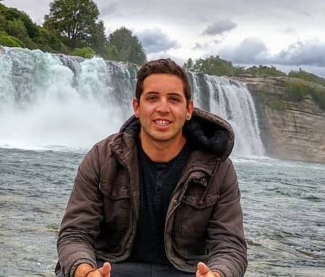

CURRICULUM VITAE

Alvaro Mauricio Muñoz Perez
LinkedIn
Resumen
Ingeniero Comercial especializado en el área de Marketing con experiencia en trato directo con el cliente y en área de ventas. Responsable, proactivo y con sentido de iniciativa tanto en los procesos internos y externos de los clientes como de la empresa. Orientado al cumplimiento de metas y objetivos siendo capaz de innovar y desenvolverme en distintos rubros.
Formación académica:
Universidad Nacional Andrés Bello (2011-2017)
- Ingeniería Comercial con mención en Marketing
- Tesis Profesional: Bar “Game Over”
- Práctica Profesional: Splice Chile Telecomunicaciones
- Práctica Formativa: Banco Internacional
Experiencia:
- Grupo Formax – Omnix AI (Octubre 2021 – A la fecha)
- Gestión comercial por mail y teléfono con el objetivo de levantar leads y prospectos para el
correcto desarrollo de reuniones, las cuales se deberán convertir en oportunidades reales.
- Generación de prospecto calificado
- Cumplimiento de los objetivos comerciales
- Entender perfiles y cargos de prospección
- Generar microconsulting y levantamientode información de prospectos
Ir al portafolio